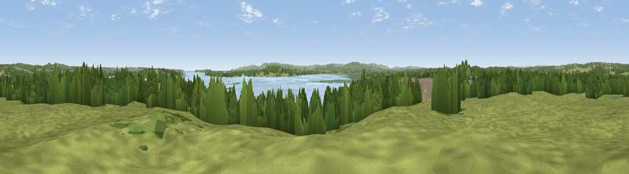

Viewpoint near Holton Heath
#23711 in England · top 47% of its area beats it · near Holton HeathWhere it is
The exact computed spot (SY 95625 91075). Click the marker for map links.
The view, rendered

A 360° render of this exact spot computed from the terrain model, tree cover and land cover — summer colours, afternoon light, calibrated against photographs of famous viewpoints. Real trees, hedges and buildings will differ in detail.
The panorama
Grey silhouette: terrain skyline in each direction (720 bearings, Earth curvature and refraction included). Dashed green: skyline with trees (+15 m) and buildings (+8 m) as obstacles. Blue strip: how far the ground is visible on each bearing.
Where the view opens
Wedge length = distance to the farthest visible ground on that bearing (vegetation-aware). Rings at 10, 25 and 50 km.
What fills the view
47% grassland · 23% woodland · 17% water · 6% built-up · 6% wetland ·
Angular shares of the visible panorama (visual magnitude), not map area. Landscape diversity 0.59 (0–1 Shannon).
Key numbers
More beautiful places nearby
The staircase of upgrades: each row has a higher view potential than everything closer. Driving times are estimates from straight-line distance, calibrated against real road routing — check an actual route before setting out.
| Place | Direction | Drive | Score |
|---|---|---|---|
| Viewpoint near Arne | SSE · 3 km | ~8 min | 55.2 |
| Viewpoint near Upton | NNE · 4 km | ~9 min | 61.0 |
| Viewpoint near Harman's Cross | SSE · 10 km | ~19 min | 76.9 |
| Viewpoint near Kimmeridge | SSW · 10 km | ~19 min | 82.9 |
| Viewpoint near Kimmeridge | SSW · 10 km | ~20 min | 84.1 |
| Viewpoint near Kimmeridge | SSW · 12 km | ~22 min | 86.6 |
| Viewpoint near Kimmeridge | S · 13 km | ~24 min | 87.5 |
| Viewpoint near Abbotsbury | W · 40 km | ~59 min | 89.0 |
50.71928, -2.06334 · source: screening · position refined by local search. Computed location — check access rights before visiting.